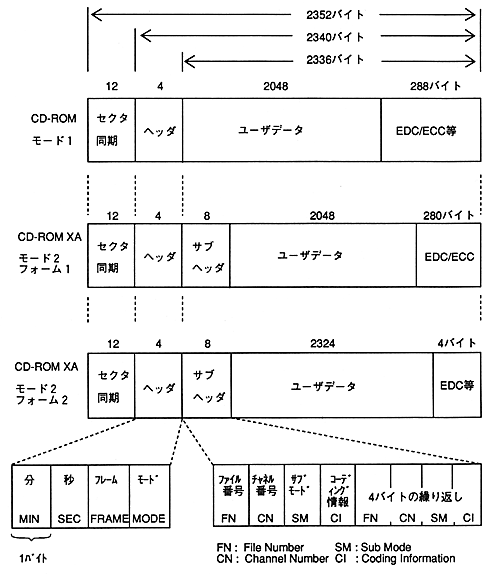

Return to previous page ｜ Return to menu ｜ Go to next page
-
5.4 Sector data format
-
(1) Basic format
- The sector data format basically conforms to the CD-ROM XA sector format.

Figure 5.8 CD-ROM XA sector format
-
(2) Handling of subheader and user data (2048 bytes)
- (a) Subheaders other than mode 2 (header mode part is 02H) are treated as 0.
(b) There is user data immediately after the header only in mode 1 (the header mode is 01H). Otherwise, mode 2
Suppose user data is in the same position as Form 1.
(c) When storing user data from a device other than a CD-ROM device, it is handled in the same way as mode 2 form 1. First
The 24 bytes are 0, and the user data is undefined.
-
(3) Conversion of absolute time from BCD to FAD
- The absolute time BCD (minute: second: frame) in the header is converted to FAD using the following formula.
FAD = {(M1 × 10 + M2) × 60 + (S1 × 10 + S2)} × 75 + (F1 × 10 + F2)
[M1 M2 S1 S2 F1 F2]: Absolute time BCD (6 digits, 3 bytes)
Absolute time is always converted using the above formula without checking the correctness of the value.
Return to previous page ｜ Return to menu ｜ Go to next page